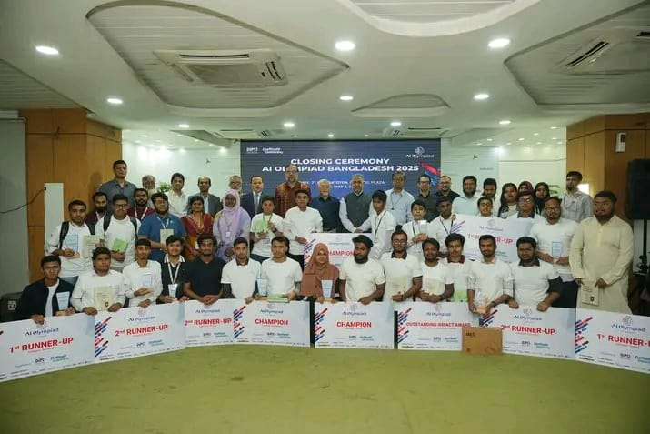

আমার জীবনের প্রথম অলিম্পিয়াডের গল্প
আসসালামু আলাইকুম। আশা করি আপনি ভালো আছেন।
আজ আমি আমার জীবনের একটি গুরুত্বপূর্ণ অধ্যায়ের গল্প বলতে চাই — আমার প্রথম অলিম্পিয়াডে অংশগ্রহণ এবং জাতীয় পর্যায়ে দ্বিতীয় স্থান অর্জনের অভিজ্ঞতা।
আমি তখন সপ্তম শ্রেণিতে পড়ি, পড়াশোনা করতাম Omar Kindergarten School-এ। একদিন হঠাৎ করেই আমাদের প্রিন্সিপাল ওমর আবদুল আজিজ স্যার আমাদের জানালেন, আমাদের স্কুলকে প্রতিনিধিত্ব করে একটি দল AI Olympiad-এ অংশ নিতে যাচ্ছে। আমি তখন কিছুটা অবাক, কিছুটা উত্তেজিত!
- আমি-মোঃ মুহি রহমান মুহি (শ্রেণি: ৭)
- সাদিক ভাই (দলনেতা, শ্রেণি: ১০)
- সৌরভ ভাই (শ্রেণি: ১০)
আমাদের প্রিয় শিক্ষক ফাহাদ বিন মামুন স্যার আন্তরিকভাবে আমাদের গাইড করছিলেন। শুধু উনিই নন — ওমর স্যার, স্কুল কর্তৃপক্ষ, এবং বিজয় স্যারও সহযোগিতা করেছিলেন।
প্রতিযোগিতায় কোনো রাউন্ড ছিল না। একটি প্রজেক্ট তৈরি করে আমরা এপ্রিল মাসের ৩ তারিখে মূল অনুষ্ঠানে অংশগ্রহণ করি।
এটি ছিল আমার জীবনের প্রথম ঢাকায় যাওয়া — অনেক ভয় ও কৌতূহল ছিল। কিন্তু সবার সামনে উপস্থাপন করার পর আত্মবিশ্বাস বেড়ে গিয়েছিল।
এই AI Olympiad-এর আয়োজন করেছিল Daffodil International University এবং প্রথম আলো। সেই প্রতিযোগিতায়, আলহামদুলিল্লাহ, আমরা জাতীয় পর্যায়ে দ্বিতীয় স্থান অর্জন করি।
মঞ্চে উঠে পুরস্কার নেওয়ার মুহূর্তটি ছিল আমার জীবনের শ্রেষ্ঠ এক অনুভূতি।
এই অর্জন আমার জীবনে আত্মবিশ্বাস, প্রেরণা এবং ভবিষ্যতের প্রতি একটি নতুন দৃষ্টিভঙ্গি এনে দিয়েছে।